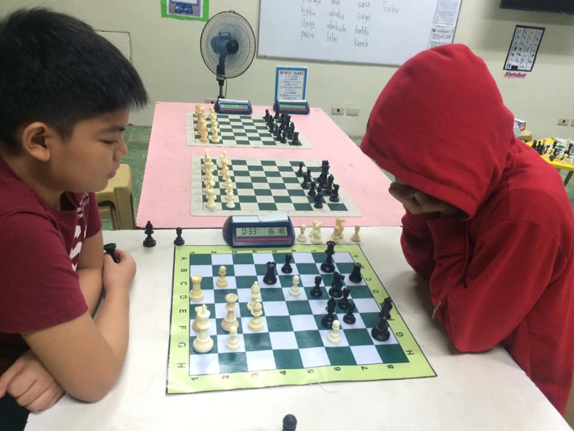
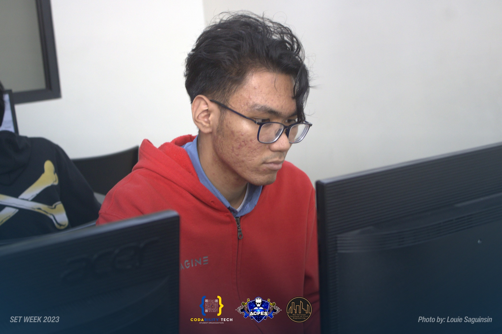

Interests/Hobbies
Playing Chess
January 16, 2024
I play chess, add me @vontheworst
Discovering chess was an ongoing journey. I immersed myself in literature, analyzed grandmasters' games, and grasped the intricacies of openings, middle games, and endgames.
Victories brought unparalleled joy, but defeats were valuable lessons. Analyzing mistakes and fortifying strategies after losses contributed to continuous improvement. Chess isn't just about winning; it's about constant growth.
Chess serves as a unique mental exercise, honing critical thinking, problem-solving, and pattern recognition. It demands foresight, calculation, and the ability to plan several moves ahead. The mental skills developed in chess extend beyond the board, influencing decision-making and strategic planning in various aspects of life.
Coding
January 16, 2024
I join a coding competition once, it was a good experience, it pushed me to new heights and expanded my horizons. The challenges faced, the skills acquired, and the connections made have all contributed to my growth as a programmer.
FAQ
Q - Why are you so quiet?
A- I think im an NPC
Q - Favorite Color?
A - Red
Q - Tapos ka na sa MP?
A - Hindi pa